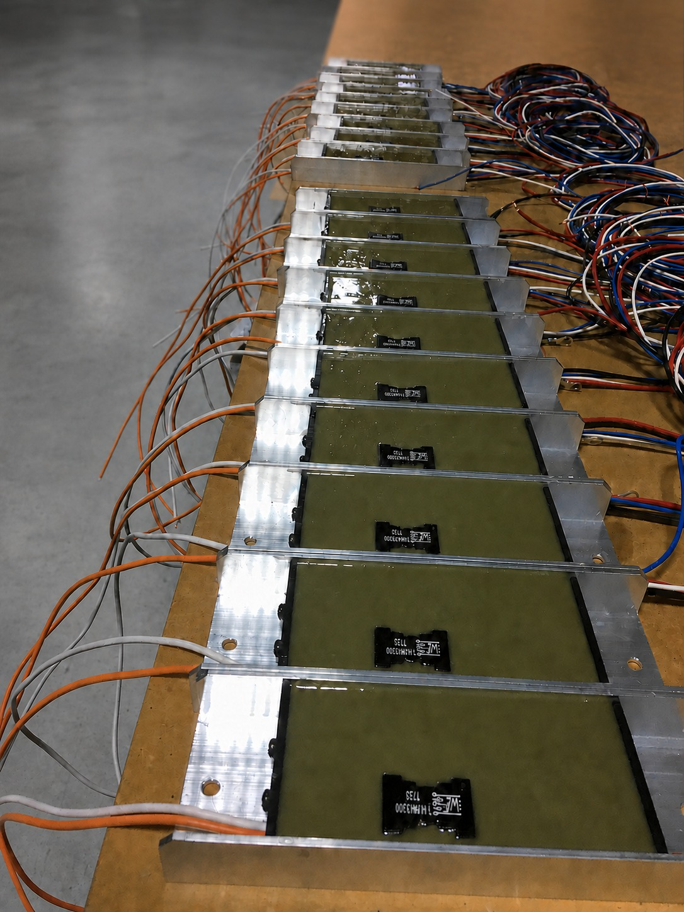
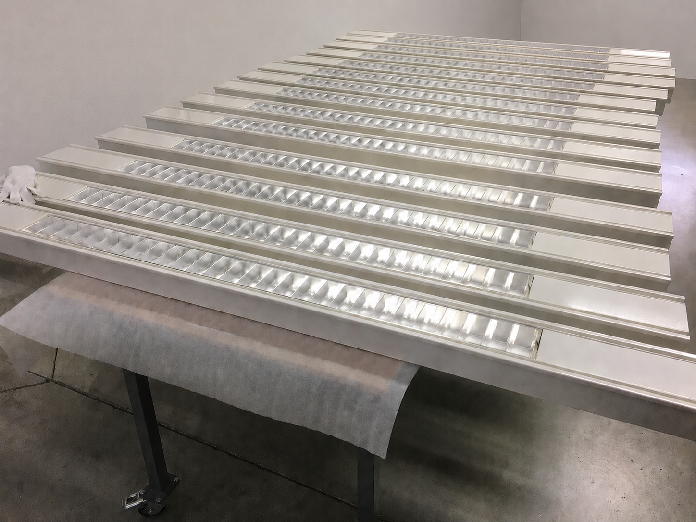
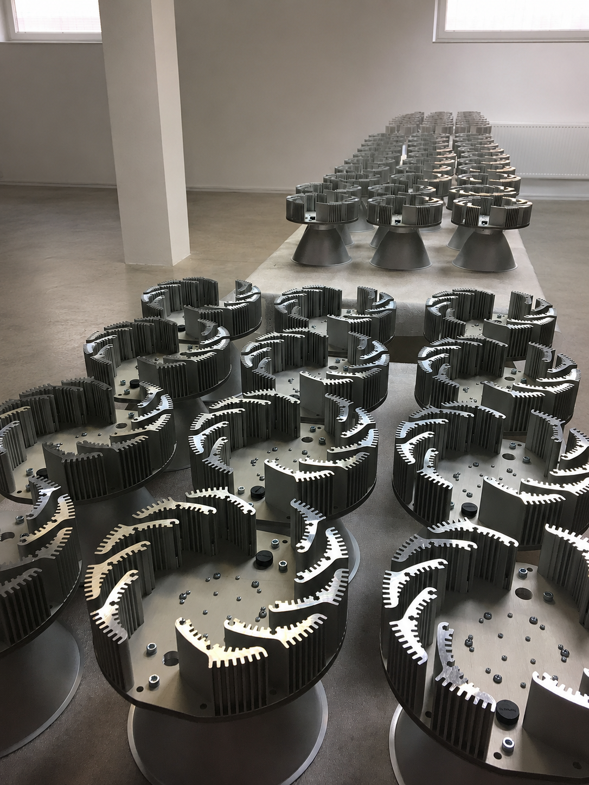

We dreigden een opdracht te verliezen door interne ondercapaciteit. Mistho nam snel verantwoordelijkheid en pakte ontwikkeling en opvolging gestructureerd over. Daardoor konden we het project toch doorzetten, zonder concessies aan kwaliteit of planning.
Van productierijp ontwerp tot complete realisatie
Mistho organiseert productie en assemblage van technische elektronica en technische producten. U werkt met Mistho als contractpartij en één aanspreekpunt voor productie in Slowakije.
Productie in beeld






Klantreviews
Wat klanten zeggen over samenwerking met Mistho.
Mistho werd op het laatste moment betrokken, toen snelheid cruciaal was. Door snel te schakelen en praktisch keuzes te maken, stond er binnen vijf dagen een werkende route richting productie. Dat heeft ons project gered.
Mistho gaf ons vooral rust in het proces. Eén aanspreekpunt, korte lijnen en snel inzicht in voortgang, risico’s en keuzes. Daardoor voelde het niet als uitbesteden op afstand, maar als een verlengstuk van ons eigen team.